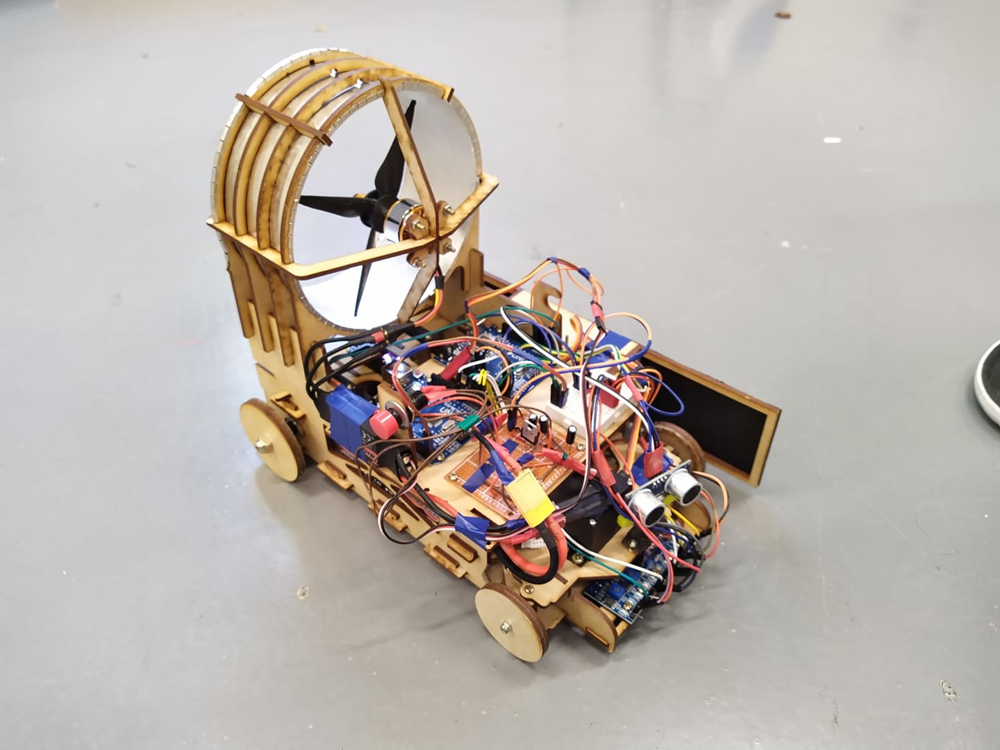

Course Project: Propeller Driven Vehicle
Course Requirement
1. Students have to design a "20*30 cm" automative vehicle which is driven by a propeller.
2. The vehicle needs to keep itself on a track marked by black duct tape.
3. The vehicle needs to track a set of speed set points with error less than 5cm/s.
4. The vehicle needs to overtake another propeller driven vehicle 2 times and overtook by that vehicle(also 2 times) when driving on an oval tack.
Design Concepts
My job was to design the control system, including the software and hardware, to meet the course requirements. My design had following features:
1. I divided the job into 2 parts: the track follow control loop and speed control loop, and I deployed them individually on 2 different arduino board. This was because it could prevent a temporary failure in one loop to interfere another loop. I also connected 2 boards by I2C.
2. We used a series of infra-red sensor to detect the duct tape position. The track follow control was governed by a simple law: if the duct tape was in the left side, then the vehicle would turn right.
3. We used optical encoder to measure current wheel speed and used a PID controller to calculate the propeller motor torque command in order to control the car speed. We also recorded current mileage to determine when we wanted to "overtake" one another.
4. We used a ultra-sonic sensor to measure the distance between 2 vehicles, so that we could keep safe distance between 2 cars.
Implementation and Result
The Propeller Driven Vehicle
Our Final Work --- One of the Propeller Driven Vehicle.
Overtake Maneuver

The overtake maneuver---First Mode

The overtake maneuver---Second Mode
Track and Front Car Following

Track and front car following on an oval track.